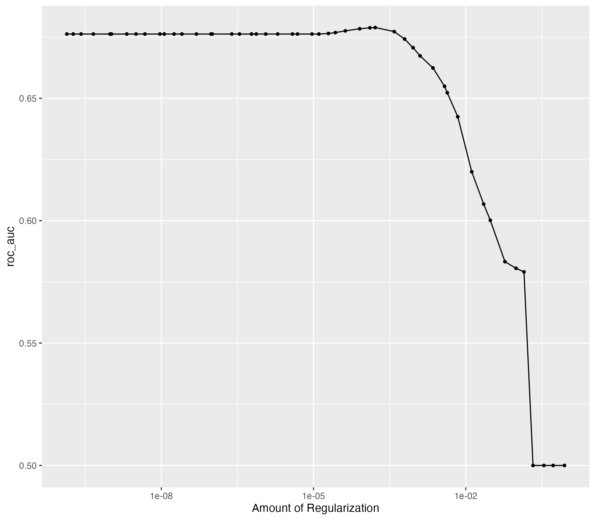
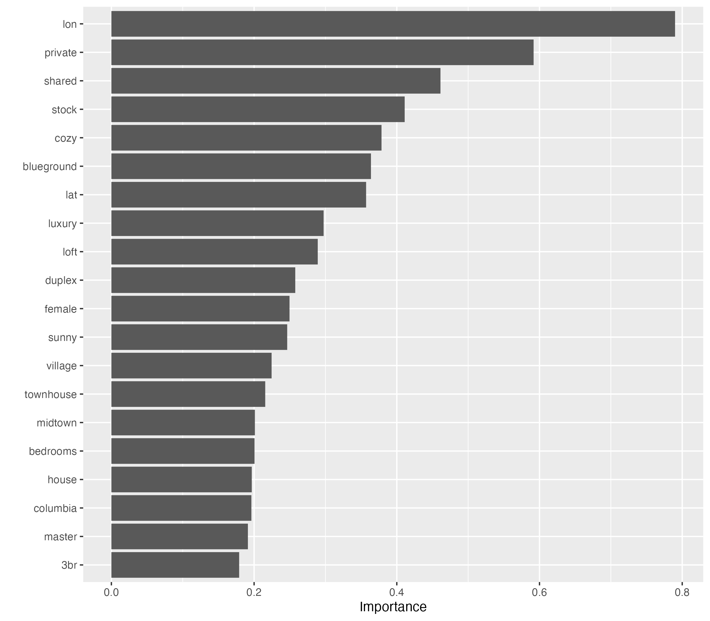

library(nyclodging)
library(dplyr)
library(tidytext)
library(tidyr)
library(parsnip)
library(recipes)
library(workflows)
library(tune)
library(rsample)
library(dials)
library(parallel)
library(vip)
library(yardstick)
set.seed(20211030)
model_df <- listings %>%
transmute(
list_id,
lon,
lat,
list_description = stringr::str_to_lower(list_description),
price
) %>%
unnest_tokens(word, list_description) %>%
filter(!stringr::str_detect(word, "^[\\d[:punct:]]+$")) %>%
anti_join(stop_words) %>%
group_by(word) %>%
filter(n() > 100) %>%
group_by(list_id, lon, lat, price) %>%
rename(price2 = price) %>% # rename to avoid confliction with the word "price"
count(word) %>%
pivot_wider(names_from = word, values_from = n, values_fill = list(n = 0))
model_df
#> # A tibble: 47,483 × 263
#> # Groups: list_id, lon, lat, price2 [47,483]
#> list_id lon lat price2 apt clean home park quiet midtown harlem
#> <dbl> <dbl> <dbl> <dbl> <int> <int> <int> <int> <int> <int> <int>
#> 1 2539 -74.0 40.6 149 1 1 1 1 1 0 0
#> 2 2595 -74.0 40.8 225 0 0 0 0 0 1 0
#> 3 3647 -73.9 40.8 150 0 0 0 0 0 0 1
#> 4 3831 -74.0 40.7 89 0 0 0 0 0 0 0
#> 5 5022 -73.9 40.8 80 1 0 0 1 0 0 0
#> 6 5099 -74.0 40.7 200 0 0 0 0 0 1 0
#> 7 5178 -74.0 40.8 79 0 0 0 0 0 0 0
#> 8 5203 -74.0 40.8 79 1 1 0 0 0 0 0
#> 9 5238 -74.0 40.7 150 0 0 0 0 0 0 0
#> 10 5295 -74.0 40.8 135 0 0 0 0 0 0 0
#> # … with 47,473 more rows, and 252 more variables: village <int>, york <int>,
#> # brownstone <int>, cozy <int>, entire <int>, floor <int>, central <int>,
#> # loft <int>, spacious <int>, studio <int>, apartment <int>, br <int>,
#> # east <int>, furnished <int>, family <int>, guest <int>, bdrm <int>,
#> # cute <int>, lower <int>, 1br <int>, beautiful <int>, upper <int>,
#> # west <int>, manhattan <int>, garden <int>, lovely <int>, rental <int>,
#> # bedroom <int>, perfect <int>, chelsea <int>, backyard <int>, hip <int>, …setup data split and preprocssing, use random forest model
# splitting
word_split <- initial_split(model_df)
word_training <- training(word_split)
word_testing <- testing(word_split)
# L1 penalized logistic model
model_spec <- multinom_reg(mixture = 1, penalty = tune()) %>%
set_mode("classification") %>%
set_engine("glmnet")
model_rec <- recipe(price2 ~ ., data = word_training) %>%
update_role(list_id, new_role = "ID") %>%
step_mutate(price2 = case_when(
price2 <= 100 ~ "< 100",
price2 <= 200 ~ "100 to 200",
price2 <= 300 ~ "200 to 300",
price2 <= 400 ~ "300 to 400",
price2 <= 500 ~ "400 to 500",
price2 <= 1000 ~ "500 to 1000",
price2 > 1000 ~ "> 1000"
) %>% factor(levels = c("< 100", "100 to 200", "200 to 300", "300 to 400", "400 to 500", "500 to 1000", "> 1000"))) %>%
step_zv(all_predictors()) %>%
step_normalize(all_predictors())
model_wf <- workflow() %>%
add_model(model_spec) %>%
add_recipe(model_rec)tuning lambda
model_folds <- vfold_cv(word_training)
model_res <- model_wf %>%
tune_grid(
model_folds,
grid = 50,
control = control_grid(save_pred = TRUE),
metrics = metric_set(roc_auc)
)
model_res %>%
show_best()
#> # A tibble: 5 × 7
#> penalty .metric .estimator mean n std_err .config
#> <dbl> <chr> <chr> <dbl> <int> <dbl> <chr>
#> 1 0.000306 roc_auc hand_till 0.681 10 0.00292 Preprocessor1_Model33
#> 2 0.000250 roc_auc hand_till 0.681 10 0.00301 Preprocessor1_Model32
#> 3 0.000112 roc_auc hand_till 0.680 10 0.00316 Preprocessor1_Model31
#> 4 0.0000948 roc_auc hand_till 0.680 10 0.00322 Preprocessor1_Model30
#> 5 0.000484 roc_auc hand_till 0.680 10 0.00266 Preprocessor1_Model34
autoplot(model_res)
model_best <- model_res %>%
select_best(metric = "roc_auc")
model_final <- finalize_workflow(model_wf, model_best) %>%
last_fit(split = word_split)
model_final %>% collect_metrics()
#> # A tibble: 2 × 4
#> .metric .estimator .estimate .config
#> <chr> <chr> <dbl> <chr>
#> 1 accuracy multiclass 0.593 Preprocessor1_Model1
#> 2 roc_auc hand_till 0.673 Preprocessor1_Model1
model_final %>%
pluck(".workflow", 1) %>%
pull_workflow_fit() %>%
vip(num_features = 20)